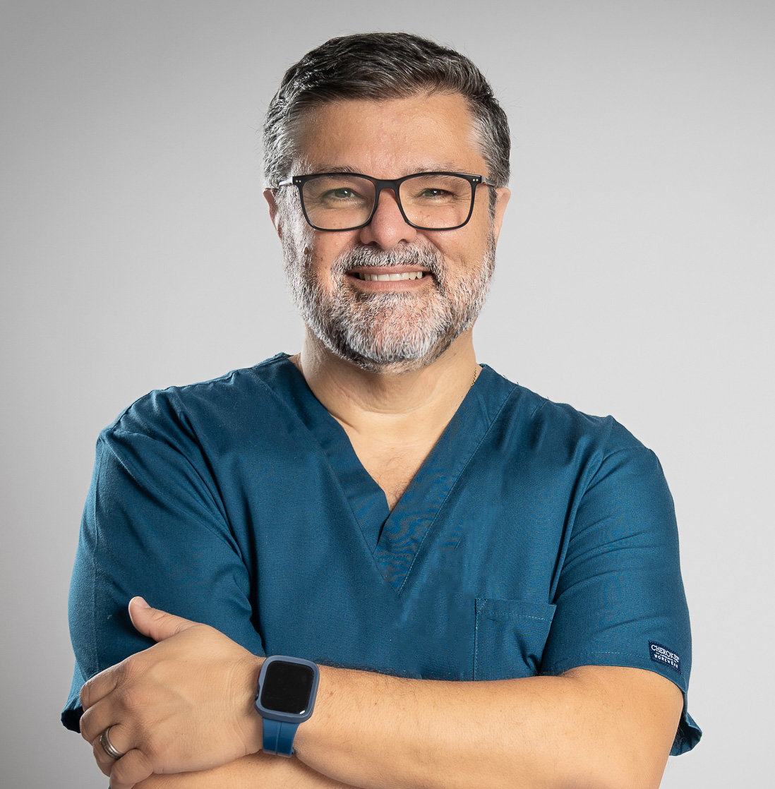

Tratamento da Coluna Vertebral
Avaliação biomecânica completa e plano de tratamento para dor cervical, dorsal e lombar. Trabalho focado na causa, não apenas no sintoma.
Taguspark · Núcleo Central
Tratamento da coluna, manipulações articulares e acupuntura clínica. A cinco minutos a pé do teu escritório — sem perder a tarde.

Cédula profissional
C-05000400
Para quem trabalha sentado
Cervicalgia ao final do dia, lombalgia depois das reuniões longas, dores de cabeça que não passam. Não é "normal" — é tratável. E provavelmente não está só num músculo.
i.
Engenheiros, consultores, gestores e developers que passam o dia em frente ao ecrã. A dor não desaparece com almofadas ergonómicas nem com vídeos de YouTube. Precisa de avaliação biomecânica e tratamento dirigido.
ii.
Corredores, jogadores de padel, praticantes de crossfit. Microlesões e desequilíbrios biomecânicos que tornam o desporto menos prazeroso do que devia ser.
iii.
Dor cervical persistente, lombalgia recorrente, ciática, cefaleias tensionais. Casos onde a abordagem fragmentada (médico → exames → fisioterapia → repetir) não está a resolver.
Tratamentos
Não há uma técnica única que resolva tudo. A diferença está em saber quando usar cada uma — e quando combinar.
Avaliação biomecânica completa e plano de tratamento para dor cervical, dorsal e lombar. Trabalho focado na causa, não apenas no sintoma.
Técnicas Thrust específicas, executadas com precisão. Restauram mobilidade articular e aliviam tensão muscular protetora. Seguras, rápidas e indolores.
Abordagem moderna, baseada em pontos anatómicos precisos. Eficaz na dor crónica, cefaleias e regulação do sistema nervoso autónomo. Reconhecida pela OMS.
Para casos pós-lesão ou de recuperação de cirurgia. Combina mobilização de tecidos com técnicas de acupuntura craniana.
Como funciona
i
Vens, contas o que te incomoda, examino. No final tens um diagnóstico funcional claro e um plano por escrito.
ii
Combinação de manipulações, acupuntura e exercício orientado — adaptado ao teu caso, à tua agenda e ao teu trabalho.
iii
Quando estiveres melhor, sessões esporádicas (cada 6-8 semanas) para não voltares ao ponto inicial.
Testemunhos
"Houve, sem dúvida, resultados, quer no alívio das dores e outros sintomas da minha hérnia cervical, quer no controlo e compreensão da ansiedade. A recetividade para ouvir e compreender o problema a fundo foi um diferencial."
"Se voltei a andar e praticar desporto foi graças a si, graças a si voltei a ter vida. O tratamento é completo, não só benefício para saúde física como mental, que é muito importante."
"Com o Leonardo encontrei um profissional que olha para as minhas lesões e trata a causa e não o sintoma. Em pouquíssimas sessões fiquei a 100% outra vez. Já recomendei a família e amigos."
"Além de uma aula de anatomia, biomecânica e ergonomia, ajustou-me todo. Imediatamente desapareceram mais de 75% das maleitas. Temos uma 'avença' mensal e não o largo mais."
Marcar consulta
Marcação pelo WhatsApp em menos de 30 segundos. Atendimento same-day sempre que possível.
Taguspark · Núcleo Central · 3º piso · Sala 340
2740-122 Porto Salvo, Oeiras